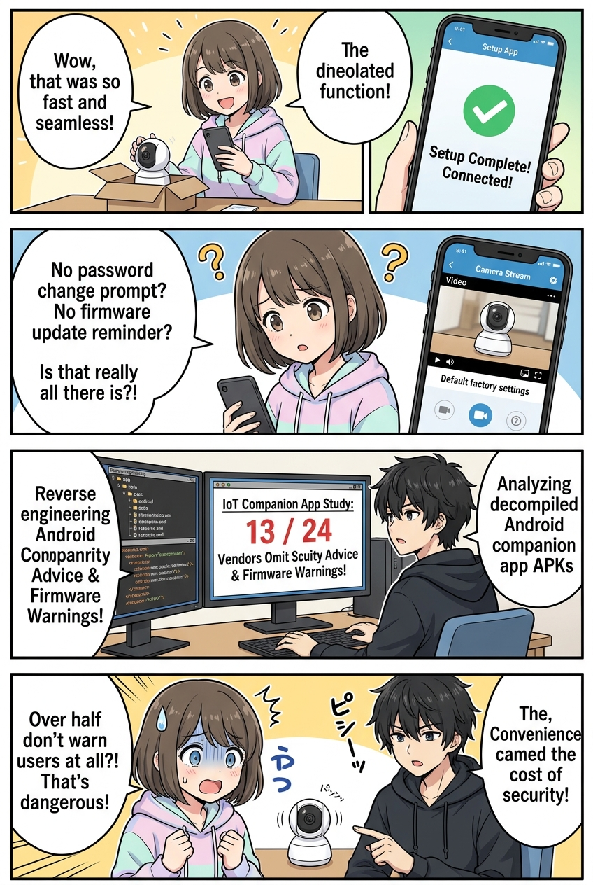
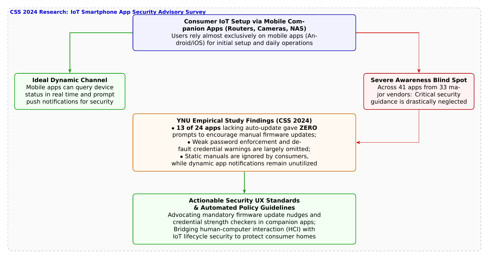

🎨 4コマ漫画挿絵（文字なし）
AI高解像度生成
▲ 【挿絵】青葉台高校 情報科学部＆帝都科学大学サイバーディフェンス・ラボでの実践シーン
💬 4コマ漫画キャラクターセリフ (Story Dialogue Script)
日・英バイリンガル (JA / EN)[蓮]「葵先輩、設定の途中でファームウェアの更新や初期パスワードの変更を促す警告って出ました？」
[Ren] "Aoi, did the app ever prompt you to update the firmware or change default credentials during setup?"
[結衣]「紙のマニュアルを読む一般ユーザーはごくわずかです。動的な通知が可能なスマホアプリこそ、最大の防衛チャネルのはずなのに……！」
[Yui] "Almost no consumers read paper manuals. Dynamic companion apps should be the primary channel for security guidance!"
[蓮]「ユーザーに責任を押し付ける前に、アプリ側が伝えるべき警告を怠っていたんだ！」
[Ren] "Before blaming users, companion apps failed to deliver essential warnings in the first place!"
[結衣]「人とテクノロジーを繋ぐインターフェースにこそ、命を守るセキュリティの優しさが求められますね！」
[Yui] "The interface bridging humans and tech must embrace thoughtful security UX to protect our lives!"
📖 小説本文
冬休みの気配が近づく放課後の部室。橘葵がスマートフォンを両手で持ち、満足そうに歓声をあげた。
「できたー！ 自宅のリビングに設置するネットワーク見守りカメラ、スマホの専用アプリからWi-Fiパスワードを入れたら、たったの1分で設定終わっちゃった！ QRコードをかざすだけでカメラとペアリングできちゃうなんて、最近のスマート家電って本当に親切で使いやすいよね！」
葵が嬉しそうに画面を揺らす。だが、隣でノートPCに向かっていた神崎蓮が、ふと眉を寄せて尋ねた。
「葵先輩、そのセットアップの手順の中で、ファームウェアのバージョン確認や、初期管理者パスワードの変更を促す画面って出ました？」
「え？ ……ううん？ 『Wi-Fiに接続されました！ お部屋の映像をお楽しみください』って可愛いキャラクターのイラストが出ただけだよ。パスワードの変更？ そんなの聞かれなかったけど……」
「やっぱりか……」
蓮が深いため息をついた。白石結衣も眼鏡を押し上げながら神妙な面持ちで口を開いた。
「葵先輩、箱の中に入っている分厚い紙の取扱説明書を隅々まで読む一般の消費者は、全体の数パーセントにも満たないと言われています。現代のIoT機器において、ユーザーが唯一必ず目を通す画面――それこそが、初期設定に使われるスマートフォンの連携アプリ（コンパニオンアプリ）なのです」
「そうだよね。アプリの言う通りに『次へ』を押すだけで、紙の説明書なんて開けもしないよ」
「だからこそ」と、部室に入ってきた城崎悠真が言葉を継いだ。「機器の状態に合わせてリアルタイムに注意喚起できるスマートフォンアプリは、セキュリティの最前線にある『命の防波堤』でなければならないんだ」
悠真はホワイトボードにスマートフォンとルーター、カメラの絵を描いた。
「ユーザーがセキュリティ対策を怠るのは、ユーザーが無頓着だからではない。メーカーが提供するアプリのUI/UX（ユーザー体験）が、必要なセキュリティ行動を促していないからではないか――このヒューマンファクターの核心に切り込んだのが、横浜国立大学SPIRALの**本多凌大氏、櫛引淳之介氏、佐々木貴之准教授、吉岡克成教授ら**によるCSS 2024の研究なんだ」
「メーカーのアプリを調べたんですか？」葵が興味深そうに身を乗り出す。
「ああ。一般家庭で広く使われているルーター、NAS、プリンター、ネットワークカメラを製造する国内外主要33社、計41個のAndroid公式連携アプリを収集した。そして、各アプリのAPK（実行パッケージ）をリバースエンジニアリングし、内部に埋め込まれているUI文字列やリソースファイルを網羅的に解析したんだ」
蓮がモニターに論文の分析グラフを表示した。
「調査結果は驚くべきものでした。調査対象のアプリのうち、ファームウェアの自動更新機能を持たず、手動で更新しなければ脆弱性が放置されてしまう機器のアプリ24個を調べたところ……なんと**過半数を超える13個のアプリにおいて、ユーザーにアップデートを推奨するメッセージが一行も存在しなかった**んです」
「ええっ！？ 半分以上のメーカーが、アプリの中で『アップデートしてね』とすら言ってくれなかったの！？」葵が息を呑んだ。
「さらに、初期設定のデフォルトパスワードを使い続ける危険性を警告したり、推測されやすい単純なパスワードを弾くチェック機能を持たないアプリも多数見つかった。メーカー側は『初期設定の手間を減らしてユーザーの離脱を防ぎたい』という利便性を優先するあまり、ユーザーを危険に晒すセキュリティアドバイスを丸ごと削ぎ落としてしまっていたんだ」
悠真の言葉に、葵は手元のスマートフォンを見つめ直した。
「便利で簡単だと思っていた親切さの裏に、そんな落とし穴があったなんて……。私、知らず知らずのうちに無防備なカメラをネットに晒すところだったんだ」
「ええ。セキュリティとは、強固な暗号数理やファイアウォールだけでなく、使う人間が迷わず安全な選択を取れるように誘導する『セキュリティUX（ヒューマンファクター）』が揃って初めて完成するものです」結衣が静かに微笑んだ。
「よし！」葵がスマートフォンを操作し始めた。「アプリの設定の奥深くを探して、強固なパスワードに変更してファームウェアも最新に更新するよ！ そして、アプリ任せにせず安全を確かめる知恵を、部活のみんなにも伝えなくちゃね！」
夕焼けに染まる部室で、若きディフェンダーたちは人と技術が真に手を取り合うための「優しきサイバー防衛」の在り方を胸に刻んでいた。
---
📊 セキュリティ構造図解 (TikZ LuaLaTeX生成)
国家安全基準・工学図解
▲ 【技術構造図】IPAデジタルスキル標準・国際規格に準拠した仕組みのモデル化